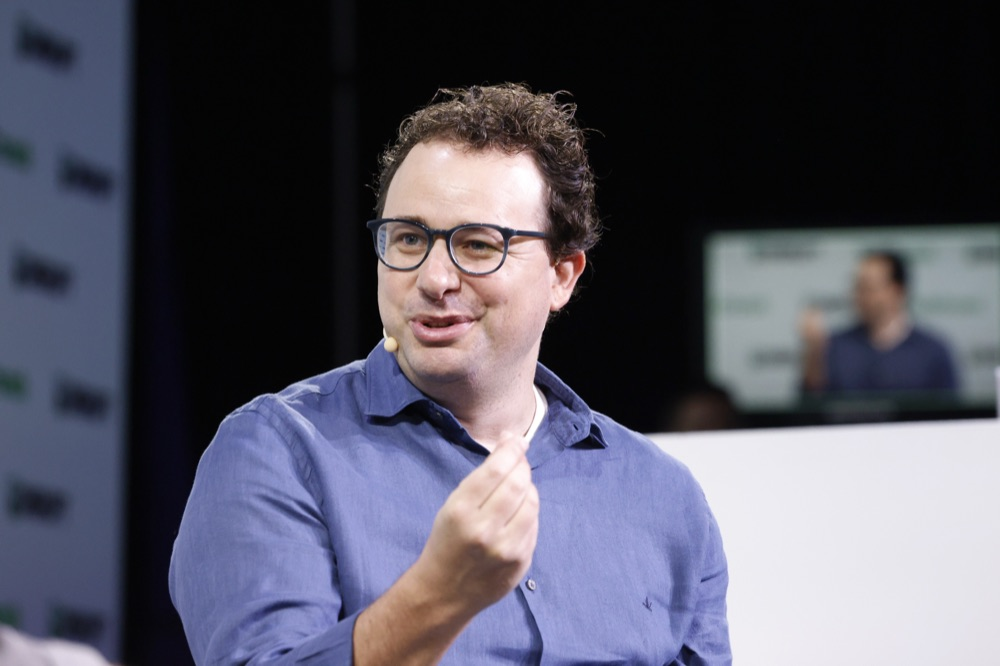
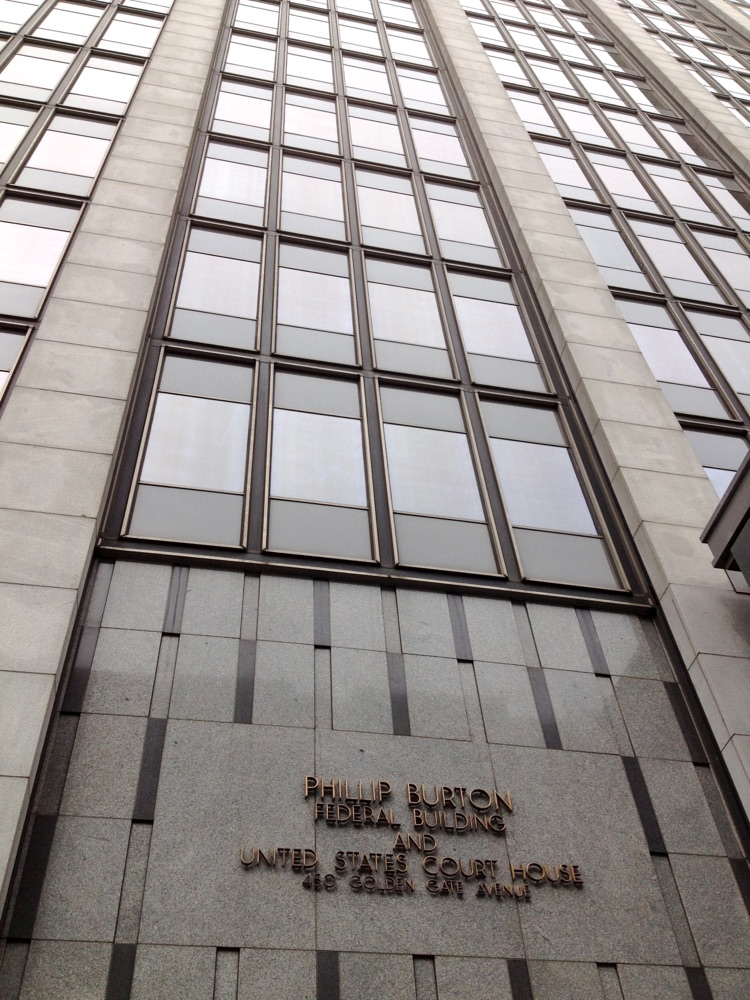
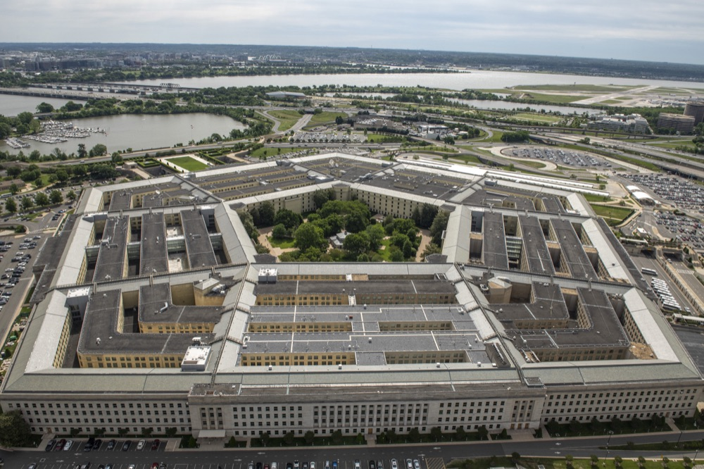

Executive Summary
On Thursday evening, August 27, 2026, U.S. District Judge Rita Lin of the Northern District of California ruled that the Pentagon's designation of Anthropic as a supply-chain risk was illegal. She gave three grounds. The designation was retaliation of a kind the First Amendment forbids, it skipped the due process the Fifth Amendment requires, and it was arbitrary and capricious under the standard that governs agency action.
What brought the label on was not a defect in the model. Anthropic had drawn two lines, refusing to let Claude be used for fully autonomous weapons or for mass surveillance of American citizens, and the Pentagon asked the company to erase them. When the talks broke down, the department applied to an American firm a category normally reserved for suppliers tied to hostile states, and the defense supply chain began pulling Claude out. Pentagon officials have disputed that the fight is over lethal weapons and mass surveillance, arguing that a private company cannot dictate how the government uses technology in scenarios like warfare and tactical operations.
Six months passed between the day the label went on and the day it was voided, and the replacement work the defense supply chain carried out in that window does not come back with the ruling. That is why a single risk entry on a vendor scorecard is worth asking about. A separate suit in Washington, D.C. is still open.

Key figures
Source: TechCrunch (2026-08-28) and CNBC (2026-03-04)
Zero
Technical findings behind the label
The judge wrote that Anthropic undisputedly lacks any backdoor access to its technology once it hands that technology over to the Defense Department
$200M
The defense contract at the center
The contract that made Claude the first major model deployed on the government's classified networks. Anthropic entered the department's ecosystem in late 2024 through a partnership with Palantir
10
Defense portfolio companies that dropped Claude
That count comes from a single venture firm's portfolio. Five days after the designation, all ten were already in active processes to replace Claude for defense use cases
6 months
Phase-out window for federal agencies
Outside the Pentagon, the Treasury Department, the State Department and Health and Human Services directed employees to move off Claude
The court called this label retaliation
Judge Rita Lin found that Defense Secretary Pete Hegseth's labeling of Anthropic as a risk to national security signified unlawful retaliation in violation of the First Amendment. In the same ruling she called the decision arbitrary and capricious, and said Anthropic had been denied the due process the Fifth Amendment requires. That is three distinct legal defects in one action.

The motive the judge found was not security. Her ruling says the government's "words and deeds confirm that the challenged actions were based on a desire to make a public example out of Anthropic for its 'arrogance' in criticizing the government." She did not leave the word security alone either. "The empty invocation of national security is not a blank check to punish and retaliate against government critics," she wrote.
The ruling did not touch the government's power to choose its vendors. Lin drew that line herself. "Though the Department of War is undisputedly free to select the AI vendor of its choice, the evidence demonstrates that the broad measures imposed on Anthropic were illegal and baseless," she wrote. What was illegal was not the decision to stop buying from a vendor. It was attaching a risk grade and then enforcing that grade across every federal agency and every contractor.
An Anthropic spokesperson welcomed the ruling in a statement shared with TechCrunch. "We welcome the court's ruling that this supply chain risk designation was unlawful." The statement went on: "We remain focused on working productively with the government to harness AI for our national security so all Americans benefit from this technology." TechCrunch said it had reached out to the Defense Department for comment.
How a guardrail that held became a risk item
Anthropic entered the Defense Department's ecosystem in late 2024 through a partnership with Palantir. Months after that agreement, a $200 million contract made Claude the first major model deployed on the government's classified networks. The seed of the dispute was the pair of lines attached to that work. Claude would not be used for fully autonomous weapons, and it would not be used for mass surveillance of Americans. After a February 2026 meeting between Secretary Hegseth and chief executive Dario Amodei, the department asked the company to erase those lines, and Anthropic refused.
The logic Anthropic set out in its complaint was less about product specifications than about why the company exists. "Allowing Claude to be used to enable the Department to surveil U.S. persons at scale and to field weapons systems that may kill without human oversight would therefore be inconsistent with Anthropic's founding purpose and public commitments," the suit states. It also characterized the action itself. "The federal government retaliated against a leading frontier AI developer for adhering to its protected viewpoint on a subject of great public significance," the complaint says, naming that subject as AI safety and the limitations of the company's own model, "in violation of the Constitution and laws of the United States."
The Pentagon's account points the other way. Officials there have disputed that the fight with Anthropic is over lethal weapons and mass surveillance. Their claim is that private companies cannot dictate how the government uses technology in scenarios like warfare and tactical operations, and that all of its uses would be lawful. As TechCrunch summarized the department's position, it alleged that Anthropic could try to control the military's use of the models it bought and paid for.
On Friday, February 27, the Pentagon designated Anthropic a supply-chain risk. National security experts told NPR that such a label typically applies to foreign adversary contractors that could potentially sabotage U.S. interests, and that using it against an American company is highly unusual. Secretary Hegseth declared on X that any contractor or supplier doing business with the U.S. military is barred from commercial activity with Anthropic, and President Trump posted that federal agencies would have six months to phase out their use of the technology. On March 9 Anthropic filed two suits, one in the U.S. District Court for the Northern District of California and one in the federal appeals court in Washington, D.C.
The government never treated Anthropic like a threat
The finding that the decision was arbitrary and capricious did not come from an abstract assessment. It came from the government's own conduct. Lin pointed out the disconnect between the supply-chain label and other actions the government was taking toward Anthropic at the same time. Things you do not do to a company you have declared a threat were happening side by side with the designation.

- • Secretary Hegseth proposed applying the Defense Production Act to Anthropic, which in the judge's words would mean the company was essential to national security rather than a threat to it.
- • The Defense Department was continuing to pursue a contract with the company over the same stretch of time.
- • The government was collaborating with Anthropic's new model, Mythos, on cybersecurity.
- • Anthropic undisputedly lacks any backdoor access to its technology once it hands that technology over to the Defense Department, the judge wrote.
Not one of those four items is a technical finding. Not a vulnerability found in the software, not a record of outages, not evidence that control had been lost. Look at how the government actually treated Anthropic, the judge observed, and there is no trace of a company being handled as a threat.
The record outside the ruling points the same way. Even after the designation came down, Anthropic's models were still being used to support U.S. military operations in Iran, as CNBC reported in early March. The side applying the label and the side still running the technology were inside the same government.
The risk column on a vendor scorecard is meant to hold technical facts. What went into that column here was a record of a vendor refusing to move in a negotiation. And to whoever reads the scorecard later, that record is indistinguishable from a technical fact.
The label traveled the supply chain without a technical finding
The ruling took six months to arrive, and by then the label had already finished its work. Five days after the designation, CNBC found a defense tech sector in the middle of swapping vendors. Alexander Harstrick, managing partner at J2 Ventures, which backs startups in the space, said 10 of his firm's portfolio companies that work with the Defense Department "have backed off of their use of Claude for defense use cases and are in active processes to replace the service with another one." Defense contractors like Lockheed Martin were expected to remove Anthropic's technology from their supply chains. Outside the Pentagon, the Treasury Department, the State Department and Health and Human Services directed employees to move off Claude.

The people who decided to switch never faulted the product. Harstrick, who served as a military intelligence officer in the Army reserves, told CNBC in an email that his companies were switching "out of an abundance of caution," and added a line about why. "This in no way reflected a perceived shortcoming of Claude with most commenting that the situation was lamentable as the product itself is excellent," he wrote. Anthropic gets about 80% of its revenue from enterprise customers, which gives a sense of how far a single grade unconnected to any technical assessment can reach.
The spread ran wider than the label's own terms. On the day of the designation, Anthropic wrote in a blog post, citing a federal statute enacted by Congress, that Hegseth lacks the authority to restrict companies that work with Anthropic from doing business with the government. Should the designation be made official, the company wrote, it would only apply to companies' use of Claude as part of defense contracts and "cannot affect how contractors use Claude to serve other customers." On the ground, multiple defense tech firms moved their entire workforce off Claude preemptively. How the label was read carried further than what the label could legally do.
The classified-network slot Claude had been first to occupy filled up over the same months. Since the feud began, Pentagon officials have said Elon Musk's xAI and OpenAI's ChatGPT have been cleared for use in classified systems. Hours after the Pentagon's announcement, OpenAI chief executive Sam Altman posted on X that his company had agreed to terms with the department on the use of its AI models. After a weekend of criticism he acknowledged that his timing was "sloppy" and that the company "shouldn't have rushed" the deal, then posted an internal memo saying the contract would be amended to add language clarifying that "the AI system shall not be intentionally used for domestic surveillance of U.S. persons and nationals." While one vendor's safety condition was becoming a risk grade, part of that same condition moved into another vendor's contract language.
A risk grade hardens into fact as it travels downstream
This case played out on the particular stage of U.S. federal procurement. Administrative law and the Constitution were available as remedies, and the ruling took six months. Those conditions do not transfer intact to corporate procurement in Korea. The stage changes, but the structure holds. A risk grade carries the judgment of whoever assigned it, and to whoever inherits and reads that grade, it looks like a fact.
The 10 portfolio companies at J2 Ventures did not switch because they had concluded something was wrong with Claude. They were reading a prime contract requirement strictly. The reasoning behind the grade falls away as the grade moves downstream, and what remains is one line saying this vendor is classified as a risk. Six months later a court can rule that line illegal, and it still cannot undo the swaps already finished.
The same label was also read in opposite ways. Tom Siebel, chairman of C3 AI, which counts the Defense Department as a customer, said he did not see a need to mitigate Claude at that point, "until it gets litigated," while a partner at another defense-focused venture firm said his portfolio companies had limited exposure. There was one grade, but how widely to read it varied with the reader, and what generated cost was not the grade itself but the width of those readings. Analysts at Piper Sandler wrote that while re-establishing AI functions with a new vendor can and will happen if needed, "Onboarding and negotiating replacement technology will take time and resources" that could have been "spent on growth opportunities."
So the question worth asking, whether you build a scorecard or inherit one, is not about the grade but about where the grade came from. Does this entry rest on a verifiable record such as a vulnerability report or an outage history, or on a judgment that grew out of a contract negotiation or a policy disagreement? The two get written into the same cell in the same color, yet their shelf life and their answerability are nothing alike. Simply recording the kind of evidence next to the entry makes the two separable when someone reads the row again later.
Editor's Note: A problem Pebblous meets over and over in data quality work shows up here in the same shape. If you do not record where a value came from, there is no way to check that value once time has passed. The risk grade on a vendor scorecard is data too. Recording the origin and the evidence alongside the grade pays off later more than filling the grade in does.
The case is not closed. Of the two suits Anthropic filed in March, the one in Washington, D.C. is still ongoing. The complaint argues not only that the measures violated the First Amendment but that they exceeded the scope of supply chain risk law. What the California ruling settled is the manner of the action, not the Defense Department's right to pick a vendor. Lin drew that line explicitly in her ruling. The freedom to select the vendor of one's choice stays where it was.
References
- 1.Bellan, R. (2026-08-28). "Anthropic gets its first court win over the Pentagon's supply-chain risk label." TechCrunch. (Quotations from the ruling and Anthropic's statement)
- 2.Allyn, B. (2026-03-09). "Anthropic sues the Trump administration over 'supply chain risk' label." NPR. (Quotations from the complaint, the Pentagon's account, and what the label normally applies to)
- 3.Kolodny, L., Levy, A., & Subin, S. (2026-03-04). "Defense tech companies are dropping Claude after Pentagon's Anthropic blacklist." CNBC. (The exodus in the defense supply chain, the $200 million contract, the six-month federal phase-out, Anthropic's reading of the designation's reach, and switching-cost analysis)